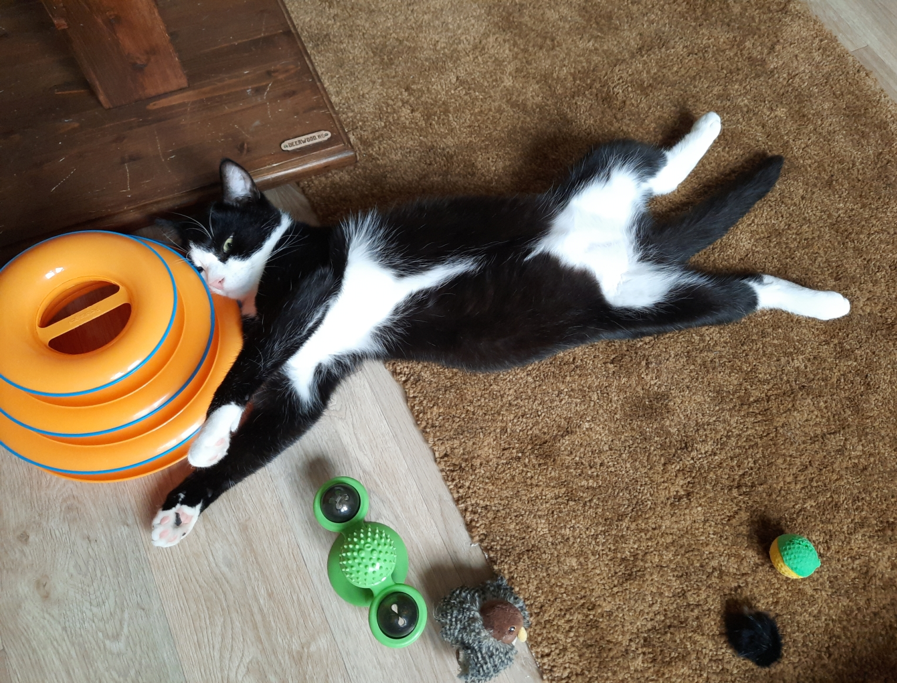

Приветствую!
Рада вас видеть! Познакомимся?
Рада вас видеть! Познакомимся?
Меня зовут Агата.
Oчень надеюсь, что скоро смогу смело представляться в качестве разработчика.
Обо мне
По образованию я экономист и организационный психолог, но ни по одной из профессий никогда не работала.
Сразу оказалась в малом бизнесе, где мне пришлось делать все: общаться с клиентами, готовить документы, искать подрядчиков и следить за работой сайтов.
Научилась отлично гуглить.  Знаю, как построить идеальный домик в лесу и сделать его комфортным и энергоэффективным, поэтому смело обращайтесь за советом!
agatha.cott@gmail.com
Знаю, как построить идеальный домик в лесу и сделать его комфортным и энергоэффективным, поэтому смело обращайтесь за советом!
agatha.cott@gmail.com
- Получила 2 красных диплома
- 7 лет занималась хореографией и выступала на одной сцене с "Машиной времени" и Максимом Галкиным
- Забочусь о 5 кошках. Идеальная компания для работы из дома!
- Помогла найти любящие семьи для 33 бездомных котеек
- Обожаю ходить пешком. Однажды прошла 10 км
- 27 раз смотрела фильм "Сталкер" А.А. Тарковского
Фото котиков
А теперь то, ради чего и делалась эта страница. Фотографии моих котиков.
Пусть они поднимут вам настроение!
Пусть они поднимут вам настроение!
|  |